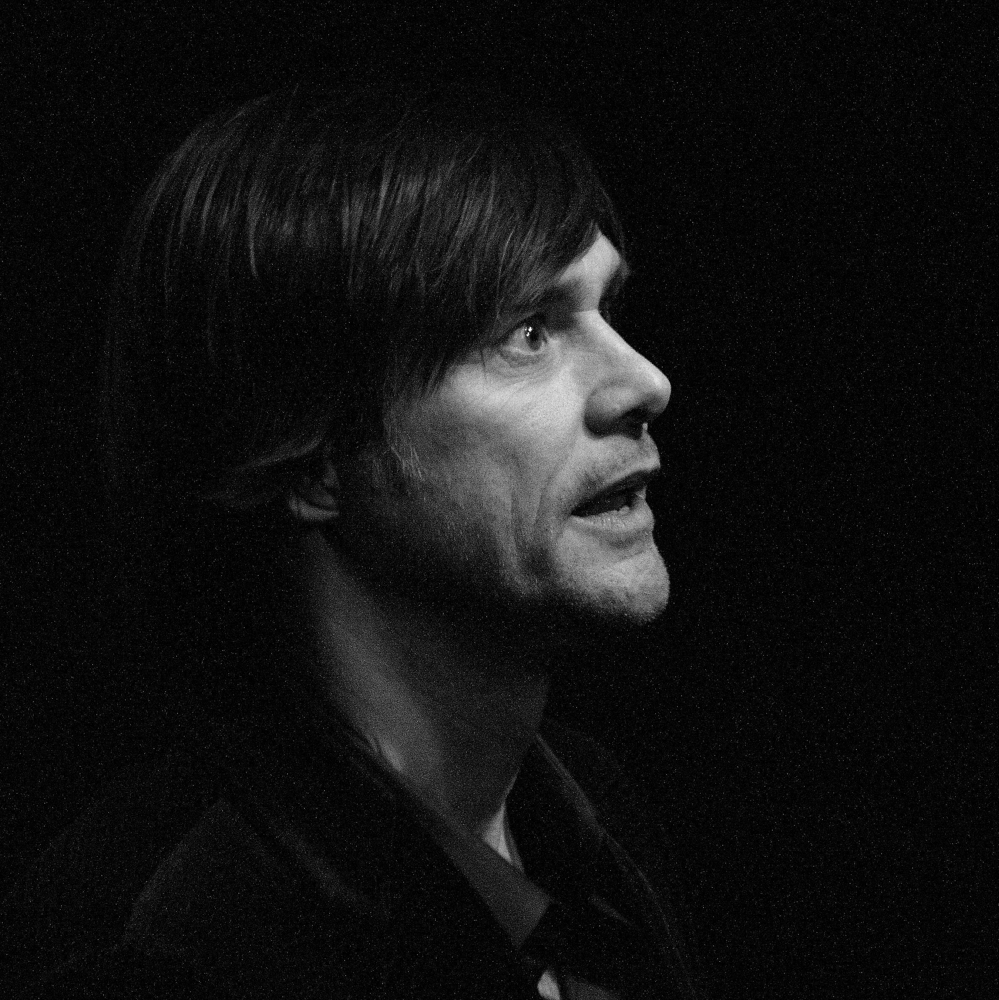

James Eugene Carrey
James Eugene Carrey born January 17, 1962 is a Canadian-American actor, comedian and artist. Known for his energetic slapstick performances, Carrey first gained recognition in 1990, after landing a role in the American sketch comedy television series In Living Color (1990–1994). He broke out as a star in motion pictures with Ace Ventura: Pet Detective, The Mask and Dumb and Dumber (all 1994). This was followed up with Ace Ventura: When Nature Calls, Batman Forever (both 1995) and Liar Liar (1997).
In the 2000s, he gained further notice for his portrayal of the Grinch in How the Grinch Stole Christmas and for the comedy Me, Myself & Irene (both in 2000), as well as Bruce Almighty (2003), Lemony Snicket's A Series of Unfortunate Events (2004), Fun with Dick and Jane (2005), Yes Man, Horton Hears a Who! (both 2008), and A Christmas Carol (2009). In the 2010s, Carrey appeared in the films Mr. Popper's Penguins (2011), The Incredible Burt Wonderstone, Kick-Ass 2 (both 2013), Dumb and Dumber To (2014), and portrayed Leap Day William in the sitcom 30 Rock (2012). In 2020, he portrayed Dr. Robotnik in Sonic the Hedgehog and its 2022 sequel and Joe Biden in six episodes of Saturday Night Live in the leadup to the 2020 United States presidential election.
Early life
Carrey was born in the Toronto suburb of Newmarket, Ontario, Canada, to Kathleen (née Oram), a homemaker, and Percy Carrey, a musician and accountant. He was raised a Roman Catholic and has three older siblings, John, Patricia, and Rita. His mother was of French, Irish, and Scottish descent, and his father was of French-Canadian ancestry; the family's original surname was Carré. At age eight, he began making faces before a mirror and discovered a talent for doing impressions. At age ten, Carrey wrote a letter to Carol Burnett of the Carol Burnett Show pointing out that he was already a master of impressions and should be considered for a role on the show; he was overjoyed when he received a form letter reply.
A fan of Monty Python, whose TV show Monty Python's Flying Circus aired in the 1970s, in 2014 Carrey appeared on Monty Python's Best Bits (Mostly) and recalled the effect on him of Ernest Scribbler (played by Michael Palin) laughing himself to death in "The Funniest Joke in the World" sketch. Radio Times states, "You'll see why immediately: Palin's performance is uncannily Carreyesque."
Career
Carrey's first stand-up comedy experience took place in 1977 at the age of 15 with his father trying to help him put together a stage act, driving him to downtown Toronto to debut at the recently-opened Yuk Yuk's comedy club operating one-night-a-week out of community centre The 519's basement on Church Street. For the performance, Carrey had his attire—a polyester leisure suit—chosen by his mother who reasoned "that's how they dress on The Dean Martin Celebrity Roast". Pubescent Carrey's conventional impersonations bombed, proving ill-suited for a club with a raunchy comedic sensibility and giving him doubts about his potential as a professional entertainer. Decades later, recalling Carrey's stand-up debut, Yuk Yuk's owner Mark Breslin described it as "bad Rich Little". His family's financial struggles made it difficult for them to support Carrey's show business ambitions.
1983-1994: Move to Hollywood
In early 1983, Carrey decided to move to Hollywood where he began regularly performing at The Comedy Store. Getting on The Tonight Show became his immediate career goal, and, by spring 1983, he appeared to have achieved it after getting booked for a stand-up set on the highly-rated late night show. However, a lukewarm club set at The Improv got him unbooked. Though struggling to replicate his success in Los Angeles, Carrey continued being a big hit in his hometown Toronto where he returned during late April 1983 to perform at the short-lived B.B.
Magoon's theatrical venue on Bloor Street on three consecutive nights. While in town, CTV's flagship newsmagazine program W5 did a feature on Carrey that aired nationally in Canada. Back in L.A., within months, he landed the main role on The Duck Factory, a sitcom being developed for NBC, and, in late November 1983, still got to debut his impressionist act on The Tonight Show Starring Johnny Carson via a promotional appearance for the sitcom about to start airing nationally in the United States on the same network. In the meantime, he was cast for a supporting role in the Warner Bros. comedy production Finders Keepers, shot in the Canadian province of Alberta during late summer 1983.
For his Tonight Show appearance that aired on American Thanksgiving, 21-year-old Carrey went through his most popular impressions—Elvis Presley, Leonid Brezhnev, Jack Nicholson, Bruce Dern, Clint Eastwood, Charles Bronson, Michael Landon, James Dean, E.T. the Extra-Terrestrial, Charles Nelson Reilly, characters from My Three Sons, and Kermit the Frog and Miss Piggy—in rapid succession. After completing his set, though getting the OK gesture from Carson, the impressionist comic was notably not waved over by the host to join him on the couch—a usual indication that while sufficiently pleased, the powerful host was probably not ecstatic about the performance. The end of 1983 saw Carrey go back home to Toronto once more for a publicized New Years' Eve performance at the Royal York Hotel's Imperial Room.